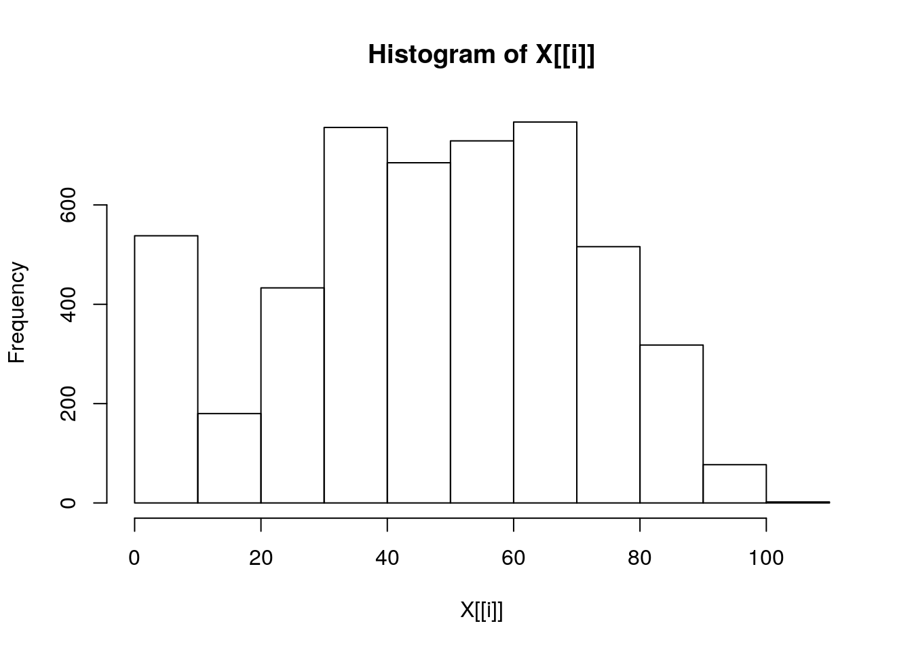
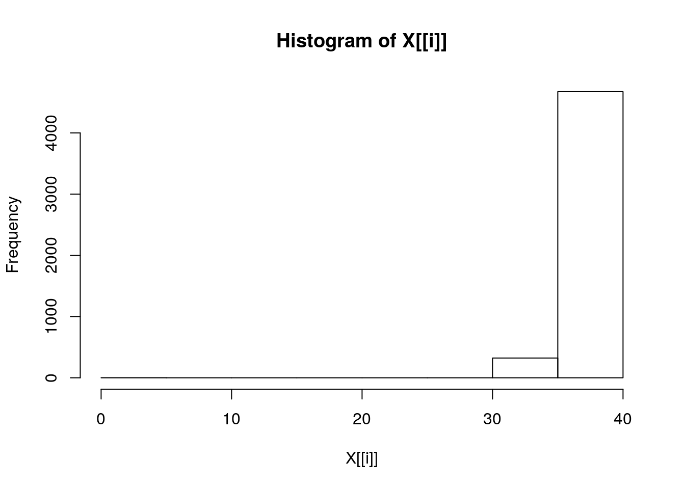
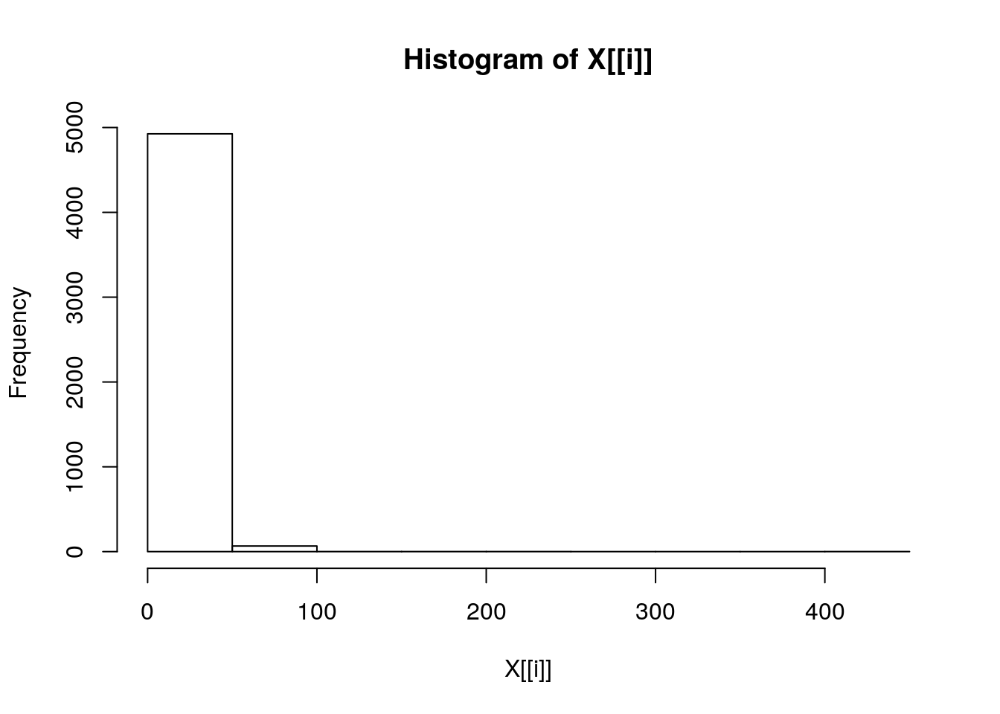
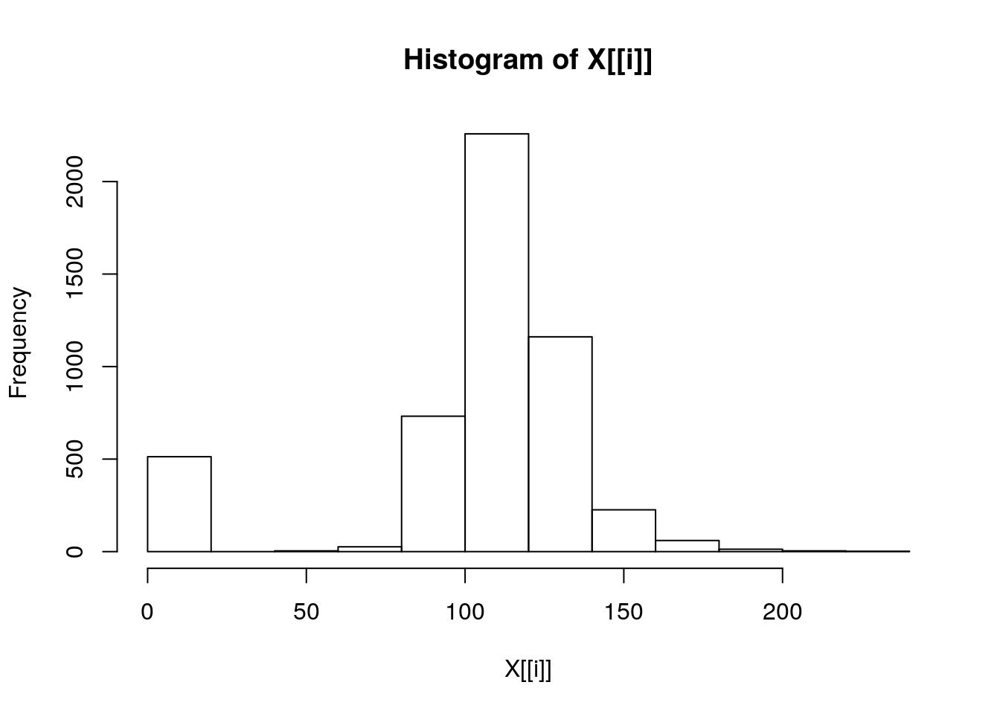
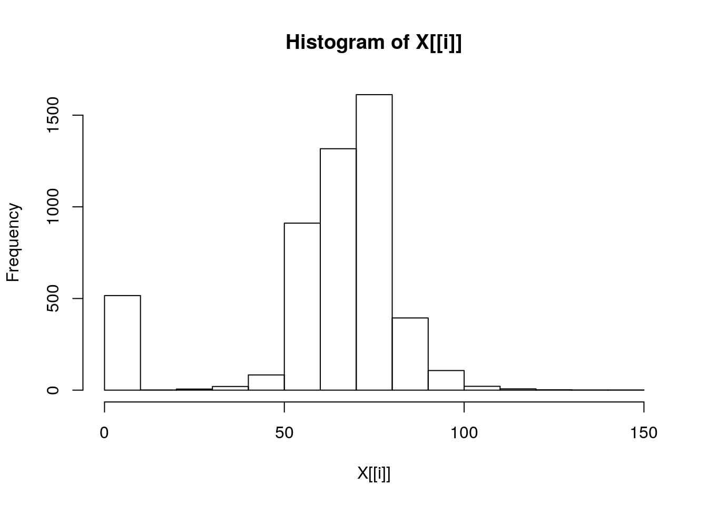
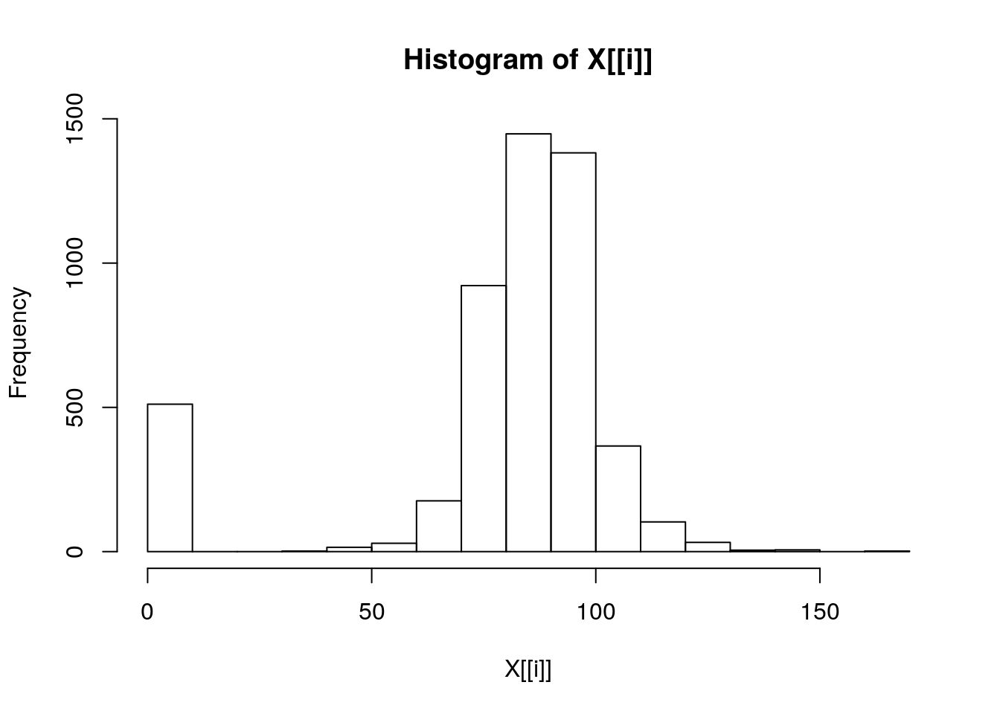
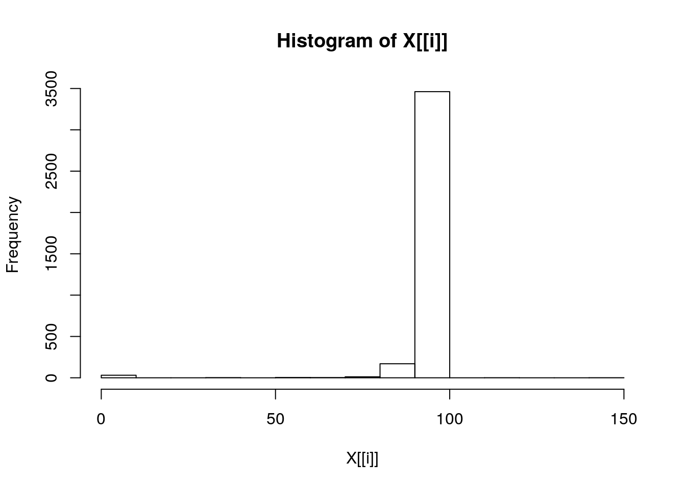

Cronograma das aulas do curso
Abaixo estão os comandos do R utilizados durante as aulas.
Módulo 1 - Probabilidade
- Aula 01 - \(01/09/2020\):
#### craindo um vetor
x <- 1:10
x [1] 1 2 3 4 5 6 7 8 9 10Agora vamos carregar um conjunto de dados
dir(pattern = '.csv')[1] "hospital.csv"dados <- read.csv('hospital.csv',
header = TRUE,
sep = '\t')
head(dados) idade setor temperatura freq_respiratoria pa_sistolica pa_diastolica pa_media sat_o2 alta.motivo
1 87 UTIG 36.0 18 128 75 93 91 Obito
2 53 1AP2 35.4 14 117 67 84 100 Obito
3 63 UTIG 36.4 40 149 75 100 78 Obito
4 84 UTIG 36.4 40 149 75 100 78 Obito
5 99 4AP2 36.3 16 80 60 67 94 Obito
6 50 UTIG 34.4 17 140 100 113 94 Obitodim(dados)[1] 5001 9str(dados)'data.frame': 5001 obs. of 9 variables:
$ idade : int 87 53 63 84 99 50 51 48 82 57 ...
$ setor : Factor w/ 17 levels "","1AP1","1AP2",..: 16 3 16 16 12 16 3 3 16 15 ...
$ temperatura : num 36 35.4 36.4 36.4 36.3 34.4 35 36 34 37.6 ...
$ freq_respiratoria: int 18 14 40 40 16 17 18 93 19 26 ...
$ pa_sistolica : int 128 117 149 149 80 140 100 100 112 156 ...
$ pa_diastolica : int 75 67 75 75 60 100 60 60 59 50 ...
$ pa_media : int 93 84 100 100 67 113 73 73 77 85 ...
$ sat_o2 : int 91 100 78 78 94 94 96 93 100 97 ...
$ alta.motivo : Factor w/ 2 levels "Melhorado","Obito": 2 2 2 2 2 2 2 2 2 2 ...var_num <- dados[,c(1,3:8)]
for (i in 1:length(names(var_num)))
print(summary(var_num[i])) idade
Min. : 0.00
1st Qu.: 32.00
Median : 49.00
Mean : 47.55
3rd Qu.: 66.00
Max. :103.00
temperatura
Min. : 0.00
1st Qu.:35.70
Median :36.00
Mean :36.02
3rd Qu.:36.30
Max. :39.70
NA's :3
freq_respiratoria
Min. : 0.0
1st Qu.: 16.0
Median : 18.0
Mean : 17.2
3rd Qu.: 19.0
Max. :418.0
NA's :5
pa_sistolica
Min. : 0.0
1st Qu.:100.0
Median :120.0
Mean :107.2
3rd Qu.:130.0
Max. :230.0
NA's :2
pa_diastolica
Min. : 0.00
1st Qu.: 60.00
Median : 70.00
Mean : 65.75
3rd Qu.: 80.00
Max. :148.00
NA's :2
pa_media
Min. : 0.00
1st Qu.: 77.00
Median : 87.00
Mean : 79.52
3rd Qu.: 93.00
Max. :170.00
NA's :2
sat_o2
Min. : 0.00
1st Qu.: 94.00
Median : 96.00
Mean : 94.78
3rd Qu.: 98.00
Max. :147.00
NA's :1315 Gráficos
lapply(var_num, hist)

Este conteúdo está disponível por meio da Licença Creative Commons 4.0